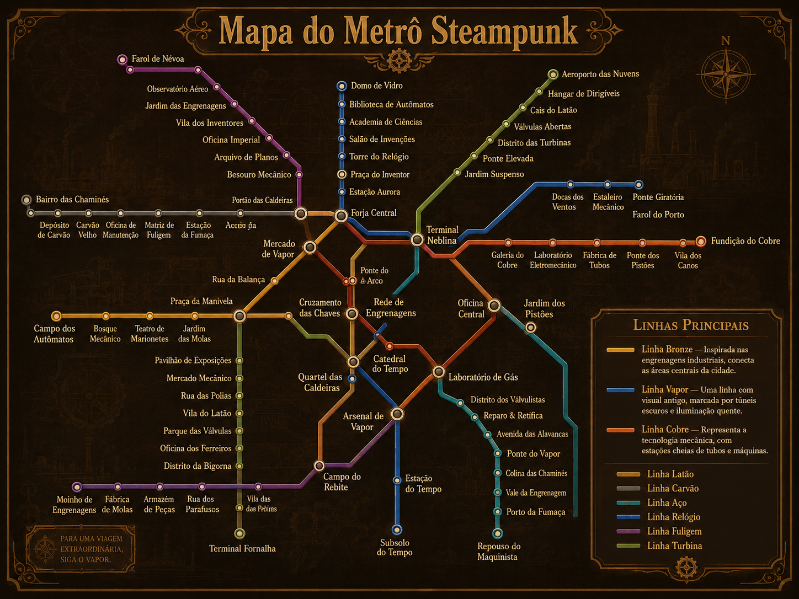

A História do Metrô
O metrô representa velocidade, organização e modernidade. Em uma versão steampunk, ele se transforma em uma poderosa máquina subterrânea movida por vapor, engrenagens e mecanismos metálicos.
As estações ganham aparência industrial, com tubos aparentes, relógios antigos, placas de bronze e luzes amareladas.
Transporte Subterrâneo
Um sistema criado para conectar pessoas, bairros e histórias por meio de trilhos escondidos abaixo da cidade.
Linhas do Metrô

Linhas Fundadoras
Linha Bronze
A Linha Bronze foi a primeira grande rota construída no Metrô Steampunk. Ela surgiu quando os antigos engenheiros da cidade precisaram ligar as oficinas centrais, os mercados mecânicos e os bairros industriais.
Seus trilhos foram feitos com ligas de bronze reforçado, escolhidas por resistirem ao calor das caldeiras e ao peso das máquinas subterrâneas. Por isso, a linha ficou conhecida como o coração mecânico da cidade.
Atualmente, a Linha Bronze é projetada para conectar as áreas centrais, transportando trabalhadores, inventores, peças metálicas e pequenas máquinas entre os principais pontos urbanos.
Linha Vapor
A Linha Vapor nasceu nos túneis mais antigos da cidade, onde antes passavam dutos de pressão e canais subterrâneos de energia térmica. Com o crescimento do metrô, esses túneis foram adaptados para receber trens movidos por sistemas de caldeiras.
Ela ficou famosa por seu visual antigo, com paredes escuras, lanternas amareladas, fumaça constante e estações cercadas por canos e válvulas. Muitos passageiros dizem que viajar por ela parece entrar em outra época.
Hoje, a Linha Vapor é projetada para atravessar regiões profundas e antigas da cidade, funcionando como uma rota histórica e turística, além de servir como ligação entre bairros subterrâneos e zonas industriais.
Linha Cobre
A Linha Cobre foi criada durante a era das grandes invenções mecânicas. Seu objetivo inicial era transportar energia, ferramentas e técnicos entre laboratórios, fábricas de tubos e estações experimentais.
O cobre foi escolhido como símbolo dessa linha por representar condução, tecnologia e precisão. Suas estações possuem muitos painéis, cabos, tubos, relógios de pressão e mecanismos de controle espalhados pelas paredes.
Atualmente, a Linha Cobre é projetada para atender as áreas tecnológicas do metrô, ligando centros de manutenção, oficinas de automação e setores responsáveis pelo funcionamento das máquinas da cidade.
Curiosidades
- A Linha Bronze é considerada o coração do sistema, pois foi a primeira linha criada para ligar as oficinas centrais da cidade.
- A Linha Vapor passa pelos túneis mais antigos do metrô, onde ainda existem canos, válvulas e antigas caldeiras nas paredes.
- A Linha Cobre é famosa por atravessar um trecho construído por baixo da água, conhecido como Túnel Submerso das Engrenagens.
- Algumas estações possuem relógios mecânicos gigantes que controlam a abertura dos portões e a chegada dos trens.
- Em algumas plataformas, a fumaça que sai dos tubos não é apenas decoração: ela ajuda a liberar a pressão das máquinas subterrâneas.
Túnel Submerso das Engrenagens
Um dos pontos mais impressionantes do metrô é o trecho da Linha Cobre que passa por baixo da água. Esse túnel foi construído com placas de metal reforçado, grandes parafusos de pressão e bombas movidas a vapor para impedir a entrada de água.
Durante a viagem, os passageiros conseguem ouvir o som das engrenagens trabalhando junto com o eco da água acima do túnel, tornando esse trecho um dos mais misteriosos e famosos do sistema.